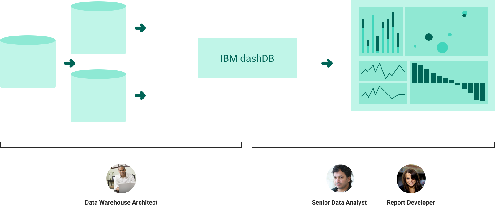
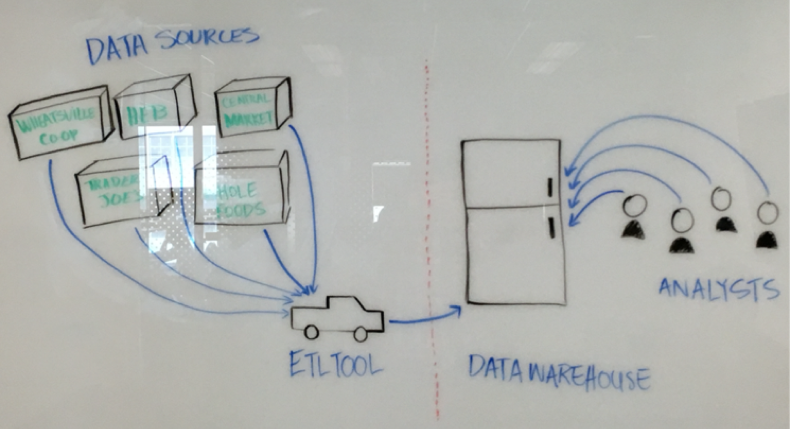
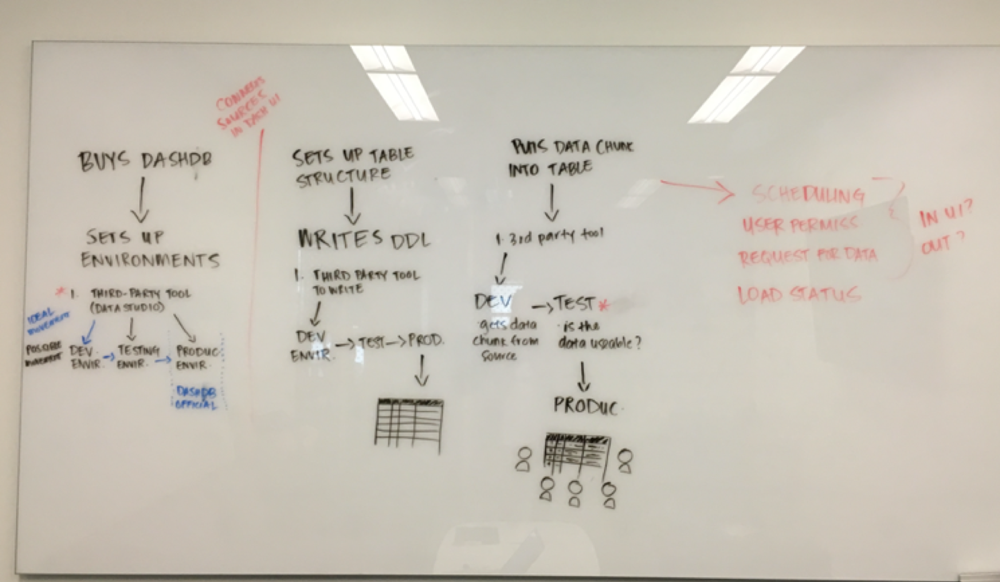
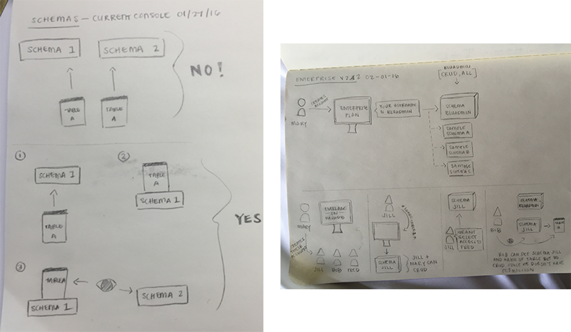
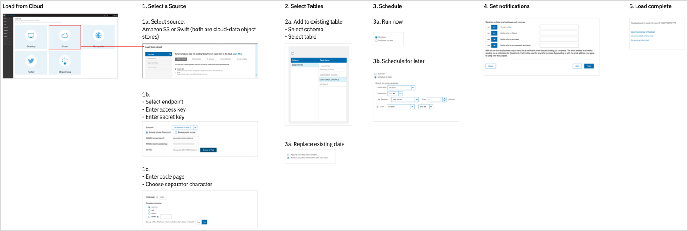
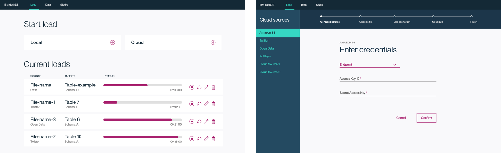
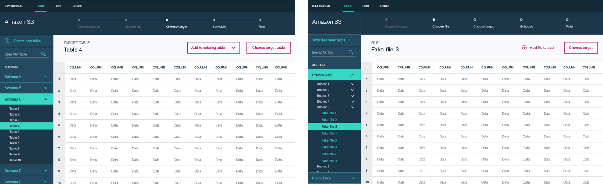
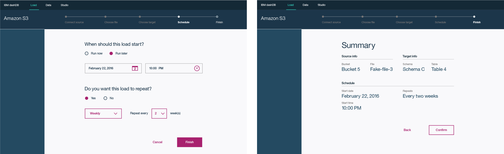

This was the first product team I joined at IBM. With this particular project, we failed to deliver value for the user and the business in the end. I chose to share this project because it was a humbling lesson in understanding business requirements versus user needs and aligning between disciplines across the team.
~
IBM dashDB
dashDB is a cloud data warehouse accessed from the web portal or the command line. At a high-level, dashDB is a place for companies to bring together all of their data and house it within one location so that they can run queries, extract information, and perform analytics.
Overview
Problem
Loading data was a major pain point in dashDB. Users worried that automated loads were not updating in tables properly, stressed by their lack of direct visibility into the server, and found it challenging to keep everyone in the organization on the same page as data structures in dashDB evolved.
Vision
How might we help people confidently load data from multiple sources into dashDB and minimize the need to worry about it?
Role and team
I was a visual and interaction designer. I divided my time between working with developers to make small improvements to the current product, while also working to explore concepts for the new version.
I worked with a UX designer, two content designers, one researcher, and one front-end developer.
Ecosystem of personas

Our main persona was the data warehouse architect. This person does the initial setup, architects the data system, sets access controls, connects new tools, updates warehouse with additional sources. The data analyst and report developer were the consumers of the data that loads into dashDB.
The data analyst runs hypothesis testing and works in the product’s SQL editor. The report developer builds reports and dashboards for analysis throughout their company.
Understanding our users
A persistent blocker for us was having zero access to people who used dashDB. Much of our connections to people who worked with other cloud data warehouses came from grassroots efforts initiated by myself and our user researcher. Both of us would literally search for people on LinkedIn and reach out for an interview, or tap into our social media networks. This strategy landed us several user interviews, which informed a better understanding of the domain.
Making sense of the product and landscape
I was brand new to the data warehousing domain space and knew next to nothing about this world. At times, ramping up to speed felt overwhelming but, more often than not, I was excited and determined to figure shit out.
One method that helped tremendously was mapping these concepts out and validating them with experts on our team. These diagrams helped me develop relationships with teammates who were not colocated with me. It opened the door for stronger collaboration after they saw how eagerly I wanted to understand this area of the product and how much I valued their knowledge. The diagrams below have less to do with the interface output and more to do with the product functionality, domain vocabulary, and flow of data into and out of dashDB.

A grocery store analogy explained to me by an architect on the product. The grocery stores are a metaphor for the data sources a company could have. The truck transporting the groceries represents the extract, transform, and load process. The refrigerator is the data warehouse, or dashDB in our case. The characters grabbing food from the refrigerator are the analysts querying the data from the warehouse for analysis.

This diagram depicts a basic overview of how a user sets up dashDB. After purchasing a payment plan, the load architect will use a third-party tool to connect data sources to dashDB. Then inside dashDB, the architect sets up table structures and schedules the load jobs.

Schemas is a good example of terminology in dashDB that was confusing for both our users and our team. It seemed everyone had a different definition of the term. The organization and hierarchical relationship between schemas and tables was one of the more persistent concepts to understand.
Assessing the current data load flow

My UX designer and I went through the load flow in the current product. At the time, a user could load data from five different options: desktop, cloud sources, geospatial datasets, Twitter, or an open-source data set. Since we did not have strong insights into user pain points, my UX designer came up with assumptions to explore and validate later:
- Users had trouble understanding the five load options
- Users could not load data from multiple sources in one job
- Users want the option to preview their data before loading it into dashDB
- Users had no clear insight into the status of the load job
- Users liked the idea of the progress tracker, but needed clearer copy
Proposing a new approach
Based on our assumptions, we worked on a new user flow and experience. We presented the following concept to our offering manager and development team.

Users would land on the Load Hub, where they can start a new load and/or view their current load jobs.
Recommendations:
- Consolidated the five load options into two choices. This was because four of the original options were cloud sources, all with similar steps for loading data into dashDB.
- Provided more transparency into the current load jobs, so we included the source name, the target table, and the status and time remaining.
- Proposed functionality to pause, restart, edit, or delete the job altogether.
- Current interface had accessibility issues with input fields. There was a lack of immediate feedback and confusing copy.

After selecting the data source, users can preview the incoming data and the target table
Recommendations:
- Organized data files into a tree structure navigation to help users see the context of which their data is coming from
- Exposed a preview of the data in a table format
- Pitched a shopping cart concept where users could add multiple files to a queue to load in one job

Users would then schedule the load job and receive a confirmation
Recommendations:
- Rewrote form field copy so that it was more direct and friendly
- Broke out scheduling sections into a step-by-step conversational format
- Provided a receipt page to summarize the load job before users returned to the load hub
What went wrong
We did not understand our user, their workflow, and their needs
Zero access to dashDB users meant that our design concept was not solving for core user problems. We could not adequately communicate true pain points and how our design resolved them.
Lack of visibility into the business strategy
Redesigning the dashDB front-end experience was a low priority for the business. Our design team did not have insight into the product strategy until much later when we learned that the top focus was performance and security. The greatest need for dashDB from design was to improve the current product interface, not focus so heavily on a future replacement.
We designed in a vacuum
We did not involve teammates, like offering management and development, early enough and frequently throughout our process. This led to naive design decisions and a concept that was not grounded in reality.
What I learned
User insight is absolutely necessary
Product decisions should be driven by data and insights drawn from user research.
No product discipline should work in a silo
Initially our design team worked separately from the wider team of offering management and engineering. This contributed to basic user flow inaccuracies and functionality that simply was not feasible.
Never assume you know more than someone else
We were the newest people to join the dashDB team. Collectively we made the egotistic mistake of pitching new design concepts under the assumption that because we were designers that meant we understood what “good user experience” meant in this product context.
Scope is critical
dashDB Load is a massive section of the product. At the start of this project, we wanted to cover all load options but this proved to be too ambitious for the timeline.
Designers should understand the technical context
dashDB was built on older technology, which greatly impacted how much of the front-end interface we could influence. There was a huge disconnect between our new design team and our established development team. A lot of our prototypes were grand ideas that were not feasible to build in the production code.
On-boarding new teammates to the team/product is vital
I was one of the first designers to join the dashDB team, which was made up of people who had worked on the product for years. Joining a new team is hard, especially when much of the team is not co-located with you. Learning the domain space itself is another level of difficulty, and it requires the support and time from experts on the team.